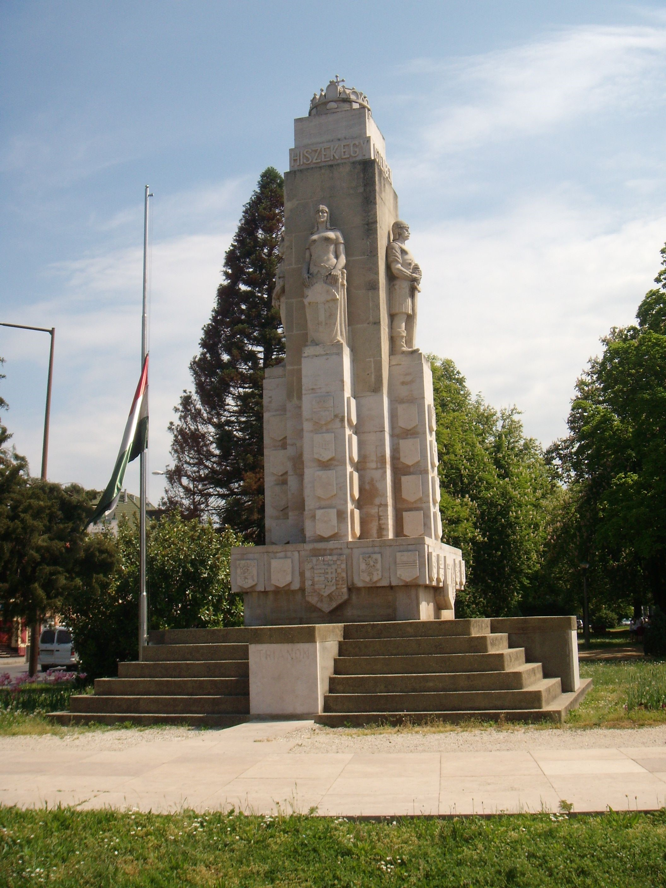

1934. október 1-jén készült el az emlékmű, amelynek költségeit (25 000 P.) a nagykanizsai születésű, Ausztriában (Salzburg) élő Schless István adományozta a városnak. Az Eötvös téren felállított 10 és fél méter magas emlékmű a díjnyertes Hübner Tibor felügyelete mellett készült borosjenői és dunaharaszti kövekből. A Nagy-Magyarország-emlékmű a történelmi Magyarország egységét és oszthatatlanságát, a trianoni békediktátum elviselhetetlenségét, a 63 vármegye Szent Koronával való együttességét, a Szent Korona alá tartozó területek egységének Trianon által okozott megcsonkíttatását, és a magyarság által évszázadokon át a hazáért hozott véráldozatait fejezte ki. A talapzatot képező lépcsősor jelképezte a munkát és fáradságot, amellyel őseink a hazát felépítették. A lépcsők közé iktatott négy kőtömb, rajtuk „Mohács”, „Mohi”, „Arad”, „Trianon” felírással a négy világtáj felé hirdették a magyar nemzet véráldozatát. A lépcsők felett a talapzaton körben a megmaradt vármegyék címerei helyezkedtek el. Az emlékmű négy oldalán lévő oszlopon az elszakított vármegyék üres címerpajzsai voltak kifaragva. A részben elcsatolt vármegyéket csonka címerükkel megvésett címerpajzsaik szimbolizálták. Összesen 63 vármegye címere, illetve címer nélküli pajzsa. A nagyobb címerek közül az elülső a Nagy-Magyarország címer volt, kétoldalt Nagykanizsa, illetve a Zrínyiek címerével (utalva Nagykanizsára, mint a Zrínyiek városára), hátsó oldalán tábla hirdette az adományozó nevét és az építés dátumát. Magasan fenn állt a négy égtáj felé nézve a négy faragott kőszobor (alkotói: Rápolthy Lajos szobrászművész és Heim Zoltán kőszobrász). Egyenként 3 méter magas és 20 mázsa súlyúak voltak, melyek a következőket ábrázolták: „Hungária”, „Ősmagyar harcos”, „Magyar földműves”, „Gyermekét tartó anya”. A négy allegorikus alak az ősi dicsőséget, a magyar vitézséget, a munkát és a szebb magyar jövőt jelképezte. Az oszlopcsoportnak a négy alak közt felnyúló végén a Magyar Hiszekegy körirata [(Hiszek egy) (Istenben) (Hiszek egy) (Hazában)] volt látható. Az egész emlékmű gondolatát pedig megkoronázta Nagy-Magyarország élő jelképe, a Szent Korona. Az alapító okmányt 1934. szeptember 27-én helyezték el a négy szoboralak fölött, majdnem 10 méter magasságban, a Magyar Hiszekegy kövei közé. Az 1934. október 28-ra tervezett felavatás elmaradt, mert a Vreme, a szerb kormány félhivatalos lapja három nappal a szoboravató előtt hosszú cikkben támadta Magyarországot és vezetőit, azt állítva, hogy Magyarország október 28-ra országos tüntetést szervezett Nagykanizsán Jugoszlávia ellen, egy „országzászló” felavatása kapcsán. 1952-ben az emlékművet eltávolították helyéről, és a mögötte lévő volt víztároló és az emlékmű között ásott gödörben hantolták el. 1999-ben elhatározás született, hogy az emlékművet felébresztik hosszú álmából. A Millenniumi Kormánybiztosi Hivatal 10 millió forinttal, és Nagykanizsa Megyei Jogú Város Önkormányzata 3,5 millió forinttal támogatta az emlékmű visszaállítását. Így a 2000. év nyarán Nagykanizsa város tulajdonába került vissza, ahogy ledöntéséig is az volt. A munkák koordinálására Szoborbizottság alakult, hogy megkönnyítse a város munkáját. A feltárás végeztével, a restaurálás után, eredeti formájában helyezték vissza az Eötvös térre a Nagy-Magyarország-emlékművet. 2001. augusztus 12-én, vasárnap, ökumenikus istentisztelet keretében került sor a felszentelésére .
